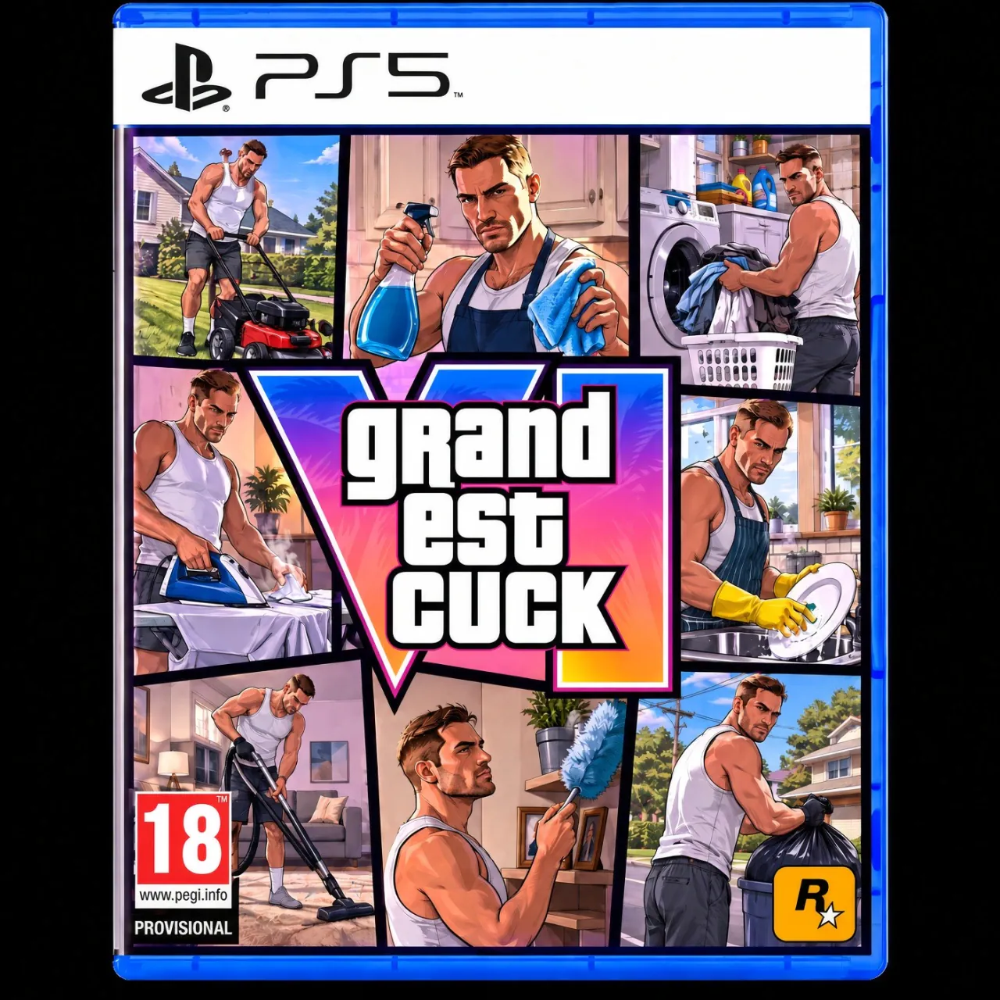

걍 저 되도않는 '99점' 때문임ㅋㅋ
솔직히 한 94~6점만 됐어도 '레데리와 GTA를 잘 섞은 쥬시한 맛의 게임' 으로 퉁쳤음
근데 99점 나오니까 사람들이 '와 씨발 얼마나 개 쩔길래 99점을?'
하고 게임했는데 모두가 상상한 99점 게임이 아니라서 반동 쎄게온거임

과거 1위였던 링크의 모험 : 시간의 오카리나 에 비교 될 수 밖에 없음.
GTA6가 링크에 비빌 정도로 혁신적이고 재미있는 게임인가? 에서
사람들이 엄격 근엄 진지하게 볼 수 밖에 없음.
점수보고 시작한 사람들이 '99점이 이것도 안돼?' 할 수 밖에 없음ㅋㅋ

====다시보는 리뷰====
콘솔 크리쳐스 - 지금까지, 앞으로도 영원한 비디오 게임의 끝. 100점
COG - 죽을 때 까지 무덤에 가지고 갈 게임이 방금 바뀌었습니다. 100점
아드레날린 - 사람 손으로 끝내는 마지막 비디오 게임 걸작의 마침표, 눈물이 났다. 100점
디지털 스파이 - 70시간 메인 스토리 밀고, 사이드, 미니게임을 200시간 즐겼음, 감정이 주체가 안 됨. 100점
엣지 - 역사상 가장 아릅답고 치명적이고 여운깊은 듀오의 파트너십이었습니다. 100점
포브스- 예상대로! 아니 조금 더 이상. 100점
게임 인포머 - 비디오 게임 중 최고의 컨텐츠, 마스터피스. 100점
게임스팟 - 오로지 '락스타'만 가능한 디테일이 수없이 숨겨져 있습니다. 100점
게이밍 트렌드 - 100년을 살아보진 않았지만 100년 중에 최고의 게임 아닐까 싶어요. 100점
자이언트 밤 - gta5 보다 조금 더 기대했고, 더 많이 보여줬습니다. 100점
IGN - 컨텐츠에서 만큼은 락스타는 타협하지 않습니다. 100점
===============
X 에 존나 뿔나서 투덜거리는 애들이 많을 수 밖에 없다.
하 ㅅㅂ 그래도 해보고싶어 빨리 PC로 출시해!!!